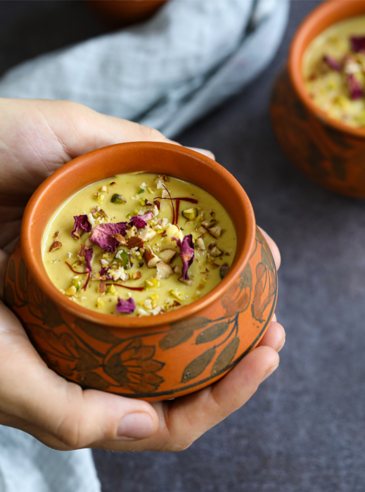

Homepage
Satvik-Rabdi

DISCRIPTION
Satvik Rabdi is a healthy, vegan, sugar-free, and dairy free adaptation of the classic Indian sweet Dessert.
INGREDIENTS
- 20 soaked cashews
- 1/2 cup chopped sweeet potato
- 1/2 + 1/2 cup water
- 3 tablespoons jaggery powder
- 1/4 teaspoon cardamom powder
- 25 saffron strands, soaked
- pinch of rock salt
Topping
- 5 almond, roasted and chopped
- 5 pistachios, roasted and chopped
- 1 teaspoon rose petal (optional)
PREPARATION
- Soak 20 cashews in water for about 6 hours.
- Soak 25 saffron stands in 1 tablespoons of warm water for 2 hours.
METHOD
- Blend the cashew, raw sweet potato, and 1/2 cup of water in a blender until creamy.
- Heat a saucepan over low flame. Pour in the remaining 1/2 cup of water and the blended mixture. Gradually increase the flame to medium while stirring continuously.
- When the mixture starts to boil,cook it for 10-15 minutes on low flame.
- Add the jaggery and cook for 3 more minutes
- Switch off the flame, add the cardamom powder, soaked saffron along with the water in which it was soaked, and salt. Mix well
- To serve warm, immediately add the Toppings and server. To serve cold, refrigerate for 1 hour, then add the toppings and serve.